Building the KV Design System
When Claude Design first dropped, I used the moment as a forcing function to build my own design system from scratch. The first pass was the creative act: choosing the palette, type roles, slide vocabulary, chart rules, and the overall restraint I wanted in my decks and technical communication.
After that, I delegated the harder operational work: formalizing the rules, turning the choices into reusable tokens, documenting the components, and making the system usable beyond a single artifact. The result is the KV Design System: a compact visual operating system for executive-ready decks, technical proposals, analytical writing, and interface sketches.
The full design-system note from my Obsidian vault is reproduced below. The specification PDF is embedded at the end.
Full design-system note
KV Design System
What this is
The personal branding and visual system for Kenneth Vallespin (KV) — built for executive-ready decks, technical proposals, and analytical communication. One small palette, two type roles, and a strict set of rules. The point is consistency and clarity, not decoration.
How to read this note
Every section pairs the rules with a rendered sample so you can see the intent, not just read it. The reference PDF is embedded below and linked for download.
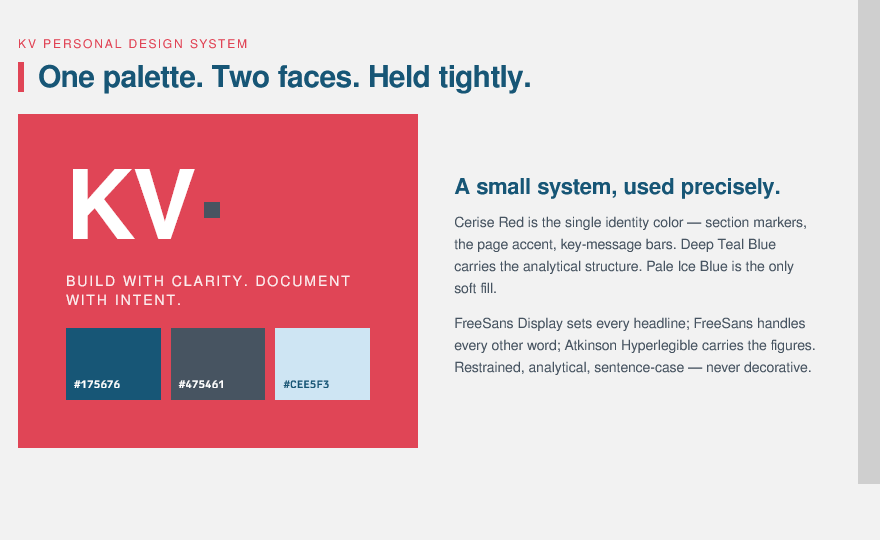
Contents
- 1 · Identity
- 2 · Color — core palette
- 3 · Color — data visualization
- 4 · Type — families
- 5 · Type — scale & usage
- 6 · Spacing, lines & markers
- 7 · Components
- 8 · Charts
- 9 · Process & timeline
- 10 · Slide masters
- 11 · Voice & content
- 12 · Do & don’t
- 13 · Token reference
1 · Identity
KV is analytical, restrained, and sentence-case. The system leans on a single identity color (Cerise Red), a structural blue (Deep Teal), and a lot of disciplined whitespace. Hierarchy is built with size, color, and a Cerise marker bar — never with decorative effects.
| Principle | In practice |
|---|---|
| One identity color | Cerise Red marks sections, accents, and the single most important number. If everything is red, nothing is. |
| Structure is blue | Deep Teal Blue carries titles, primary chart lines, and table rules. |
| Lines over boxes | Rules, hairlines, and a 6px marker bar do the work that borders and cards do elsewhere. |
| Sentence case | Titles and headings read like sentences. No Title Case, no ALL CAPS except short eyebrows. |
| No decoration | No gradients, no drop shadows on slides, no emoji, no rounded “card” tropes. |
Tagline
Build with clarity. Document with intent.
2 · Color — core palette
Ten load-bearing colors. Stay inside them — there are no “almost” exceptions. Reds are the identity; blues carry analytical structure; neutrals are never pure black or pure white.
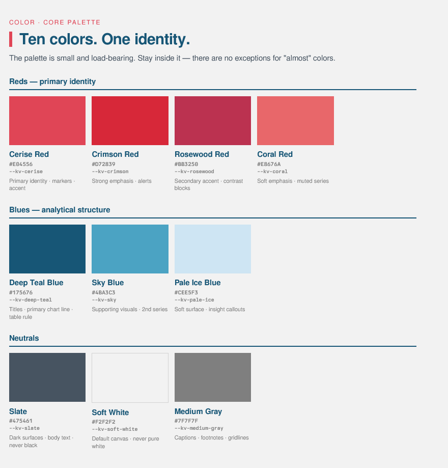
Reds — primary identity
| Color | Hex | Token | Role |
|---|---|---|---|
| Cerise Red | #E04556 | --kv-cerise | Primary identity · markers · the one number that matters |
| Crimson Red | #D72839 | --kv-crimson | Strong emphasis · alerts · negative deltas |
| Rosewood Red | #BB3250 | --kv-rosewood | Secondary accent · contrast blocks |
| Coral Red | #E8676A | --kv-coral | Soft emphasis · muted chart series |
Blues — analytical structure
| Color | Hex | Token | Role |
|---|---|---|---|
| Deep Teal Blue | #175676 | --kv-deep-teal | Titles · primary chart line · table rule |
| Sky Blue | #4BA3C3 | --kv-sky | Supporting visuals · second series |
| Pale Ice Blue | #CEE5F3 | --kv-pale-ice | Soft surface · insight callouts (the only soft fill) |
Neutrals
| Color | Hex | Token | Role |
|---|---|---|---|
| Slate | #475461 | --kv-slate | Dark surfaces · body text — never black |
| Soft White | #F2F2F2 | --kv-soft-white | Default canvas — never pure white |
| Medium Gray | #7F7F7F | --kv-medium-gray | Captions · footnotes · gridlines |
Hard rules
- Backgrounds are Soft White (
#F2F2F2), not white. Dark surfaces are Slate, not black.- Pale Ice Blue is the only soft fill. Don’t tint other colors to make pastels.
- No gradients, anywhere.
3 · Color — data visualization
The rule that changed
For categorical charts, the number of series decides which palette governs. Up to three series, the core palette leads. Past three categories the two-color core pairing stops separating cleanly, so an extended data-viz ramp takes precedence.
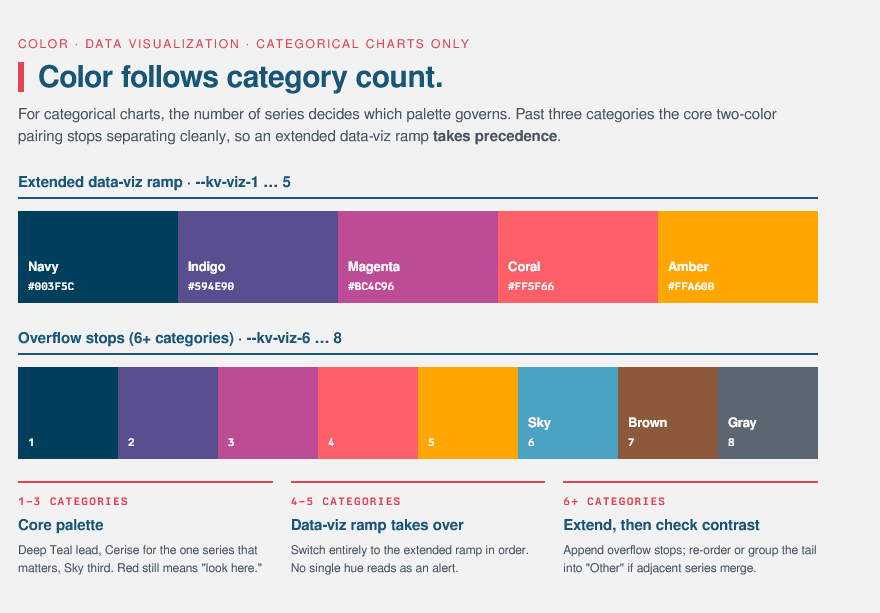
Precedence by category count
| Categories | Palette | Notes |
|---|---|---|
| 1–3 | Core palette | Deep Teal lead, Cerise for the one series that matters, Sky third. Red still means “look here.” |
| 4–5 | Extended data-viz ramp | Switch entirely to --kv-viz-1…5 in order. No single hue reads as an alert. |
| 6+ | Ramp + overflow stops | Append --kv-viz-6…8, then check contrast. Re-order or group the tail into “Other” if adjacent series merge. |
Extended ramp · --kv-viz-1 … 5
A perceptually-spaced 5-stop ramp (navy → indigo → magenta → coral → amber).
| Stop | Hex | Token |
|---|---|---|
| Navy | #003F5C | --kv-viz-1 |
| Indigo | #594E90 | --kv-viz-2 |
| Magenta | #BC4C96 | --kv-viz-3 |
| Coral | #FF5F66 | --kv-viz-4 |
| Amber | #FFA600 | --kv-viz-5 |
Overflow stops (6+ categories) · --kv-viz-6 … 8
| Stop | Hex | Token |
|---|---|---|
| Sky | #4BA3C3 | --kv-viz-6 |
| Warm brown | #8C5A3B | --kv-viz-7 |
| Cool gray | #5C6670 | --kv-viz-8 |
Tip
The ramp is for categorical encoding only. For sequential or diverging data, build a single-hue scale from Deep Teal or Cerise instead.
4 · Type — families
Two faces for words, one for figures, one for code. Hierarchy comes from size and color — not from swapping weights inside a family.
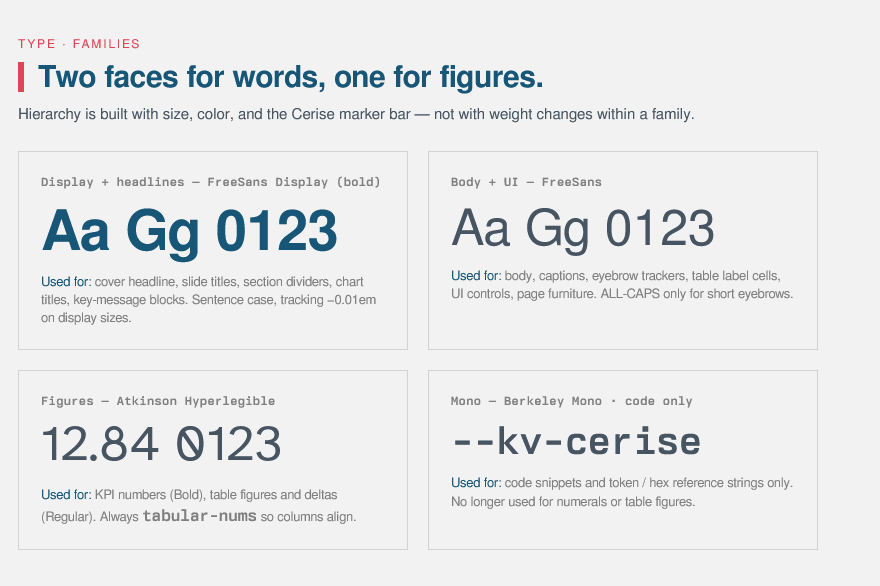
| Role | Family | Token | Used for |
|---|---|---|---|
| Display / headlines | FreeSans Display (bold cut) | --font-condensed | Cover headline, slide titles, section dividers, chart titles, key-message blocks |
| Body / UI | FreeSans | --font-sans | Body, captions, eyebrow trackers, table label cells, UI controls |
| Figures | Atkinson Hyperlegible | --font-figure | KPI numbers (Bold), table figures & deltas (Regular) — always tabular-nums |
| Mono | Berkeley Mono | --font-mono | Code snippets and token/hex strings only |
What changed
- FreeSans / FreeSans Display is the type system (open-source, Helvetica-class).
FreeSans Displayis simply the bold cut, used for every headline.- Atkinson Hyperlegible carries all figures — KPI numbers and table cells — for at-a-glance legibility with
tabular-nums.- Berkeley Mono is now confined to code snippets. It is no longer used for numerals or table figures.
5 · Type — scale & usage
Deck-scale baseline is 1920×1080. Titles are sentence case; tracking tightens to -0.01em at display sizes; eyebrows are the only uppercase.
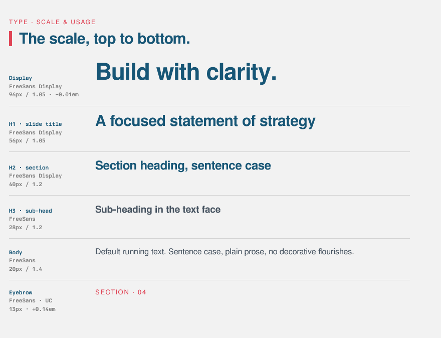
| Step | Family | Size / line-height | Token |
|---|---|---|---|
| Display | FreeSans Display | 96 / 1.05 · -0.01em | --fs-display |
| H1 · slide title | FreeSans Display | 56 / 1.05 | --fs-h1 |
| H2 · section | FreeSans Display | 40 / 1.2 | --fs-h2 |
| H3 · sub-head | FreeSans (bold) | 28 / 1.2 | --fs-h3 |
| Body large | FreeSans | 24 / 1.4 | --fs-body-lg |
| Body | FreeSans | 20 / 1.4 | --fs-body |
| Caption | FreeSans | 16 / 1.4 | --fs-caption |
| Eyebrow | FreeSans · UC · +0.14em | 13 | --fs-eyebrow |
Minimums
On 1920×1080 slides, never go below 24px. In print, 12pt is the floor.
6 · Spacing, lines & markers
A 4-based spacing scale, and a deliberate vocabulary of lines instead of boxes. KV is rectilinear by default.
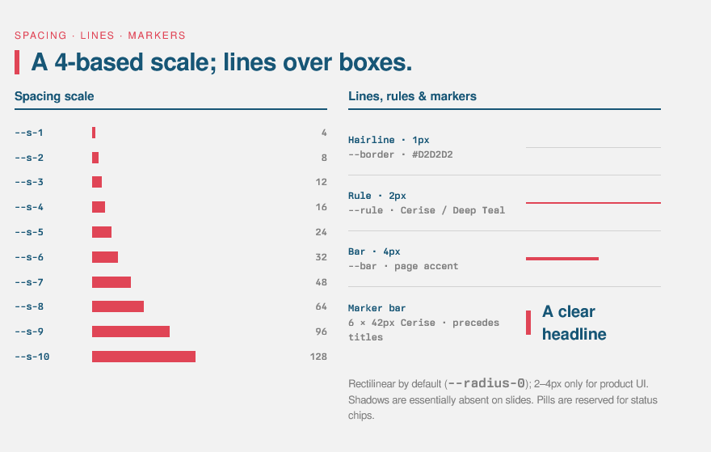
Spacing scale
| Token | px | Token | px |
|---|---|---|---|
--s-1 | 4 | --s-6 | 32 |
--s-2 | 8 | --s-7 | 48 |
--s-3 | 12 | --s-8 | 64 |
--s-4 | 16 | --s-9 | 96 |
--s-5 | 24 | --s-10 | 128 |
Lines, rules & markers
| Element | Spec | Token |
|---|---|---|
| Hairline | 1px · #D2D2D2 | --hairline / --border |
| Rule | 2px · Cerise or Deep Teal | --rule |
| Bar | 4px · page accent | --bar |
| Marker bar | 6 × ~42px Cerise block before a title | (compose with --bar) |
Shape & elevation
Default radius is 0 (
--radius-0); use 2–4px only for product UI. Shadows are essentially absent on slides —--shadow-1/2exist for product surfaces only. Pills (--radius-pill) are reserved for status chips.
7 · Components
Buttons, badges, KPI tiles, tables, and callouts — the working parts of a KV deck or doc.
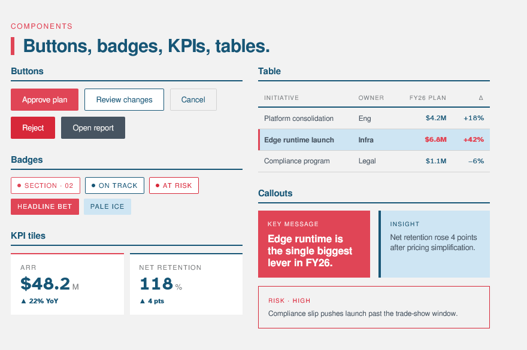
- Buttons — Primary (Cerise fill), Secondary (Deep Teal outline), Ghost (hairline), Danger (Crimson), Inverse (Slate). 2px radius max.
- Badges / status chips — pill shape, hairline or solid; Cerise / Teal / Crimson dots for section, on-track, at-risk.
- KPI tiles — Atkinson Hyperlegible Bold number with a small
--font-sansunit; 2px top rule in Cerise (or Deep Teal for secondary). Deltas in Atkinson, Crimson when negative. - Tables — Deep Teal 2px header rule, hairline row dividers, figure cells right-aligned in Atkinson with
tabular-nums. Emphasis row gets a Pale Ice fill + Cerise edge bar. - Callouts — Key message (Cerise block, white text), Insight (Pale Ice with Deep Teal edge), Risk/alert (Crimson hairline).
8 · Charts
Make the point, then move on. Minimal gridlines, labeled directly where possible, source line in Medium Gray. The series count drives the palette (see 3 · Color — data visualization).
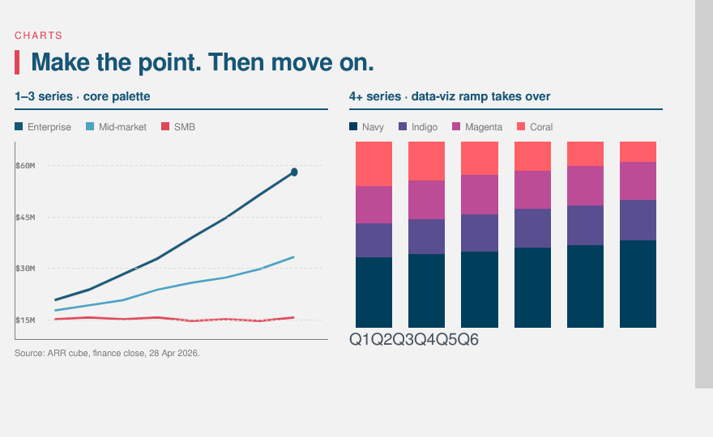
- 1–3 series use the core palette — Deep Teal lead, Cerise for the series that matters, Sky third.
- 4+ series switch entirely to the extended data-viz ramp so no single hue reads as an alert.
- Always cite the source in a Medium Gray caption beneath the chart.
9 · Process & timeline
Flows and timelines use numbered steps, a thin baseline, and Cerise to mark “done / now.”
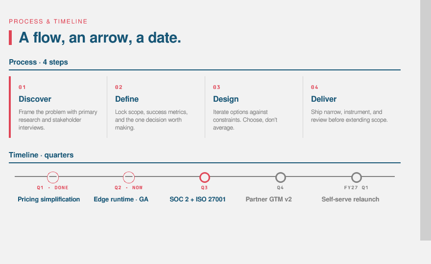
- Process — numbered steps (
01–0n), first step gets the Cerise edge; titles in FreeSans Display, descriptions in FreeSans. - Timeline — a 2px baseline with filled Cerise nodes for past/current milestones and hollow nodes for upcoming; quarter labels in mono, milestone labels in FreeSans Display.
10 · Slide masters
Ten masters cover the recurring jobs of an executive deck. Cover is on Cerise; the section divider is on Slate; everything else sits on Soft White.
01 · Title (cover on Cerise)
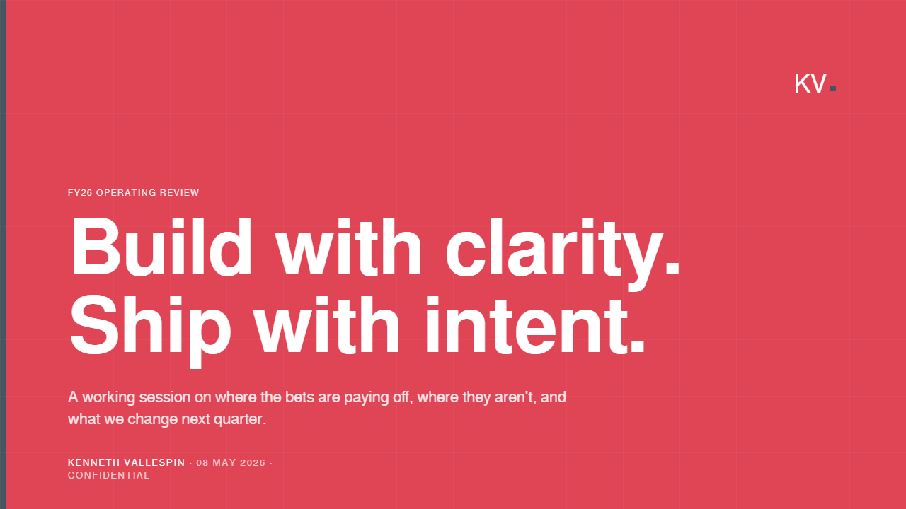
02 · Section divider (on Slate)
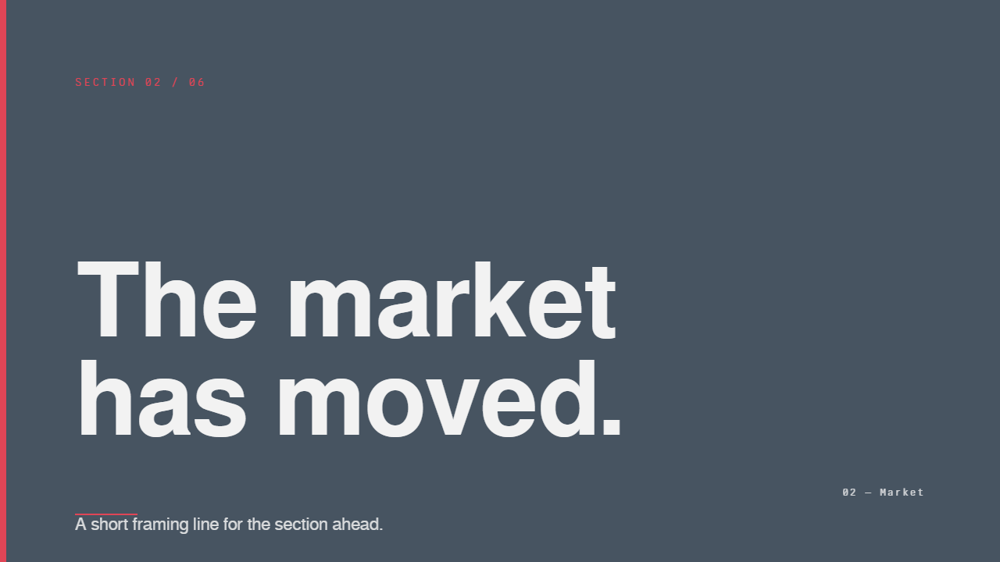
03 · Executive summary
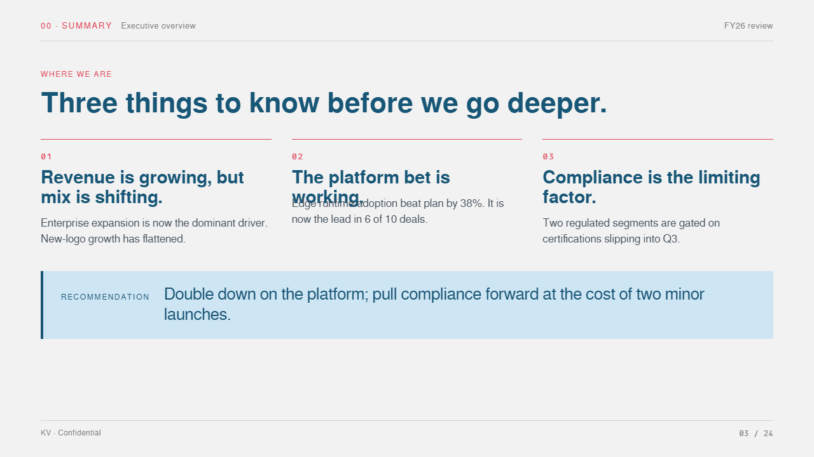
04 · One message
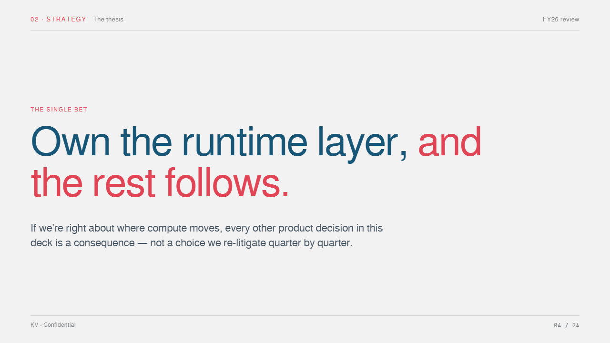
05 · Two column
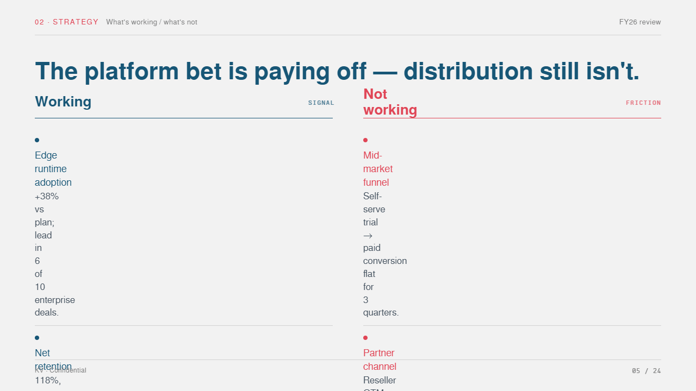
06 · Chart
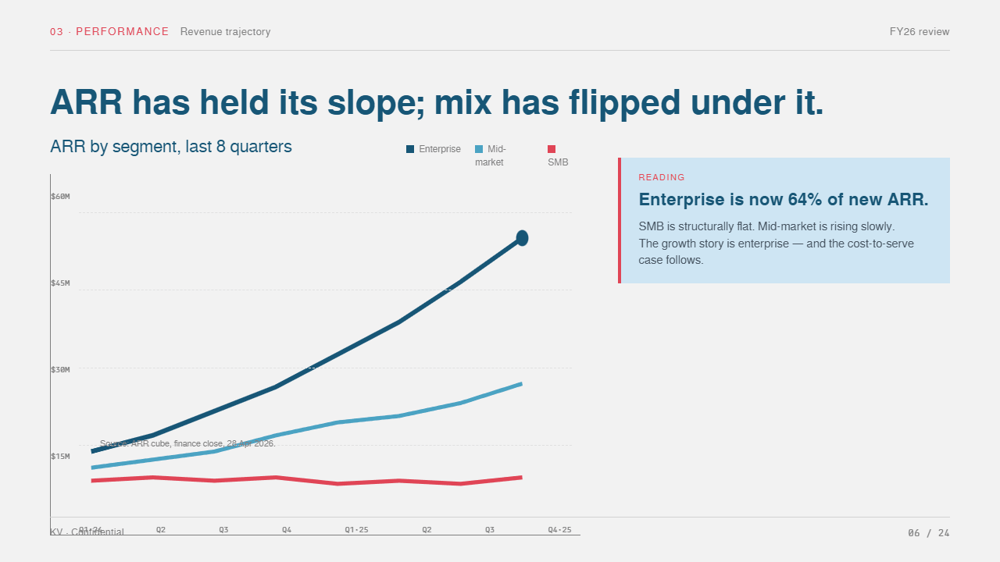
07 · Table
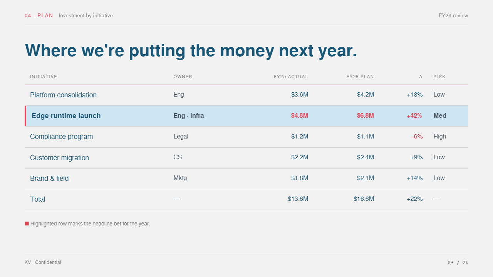
08 · Timeline
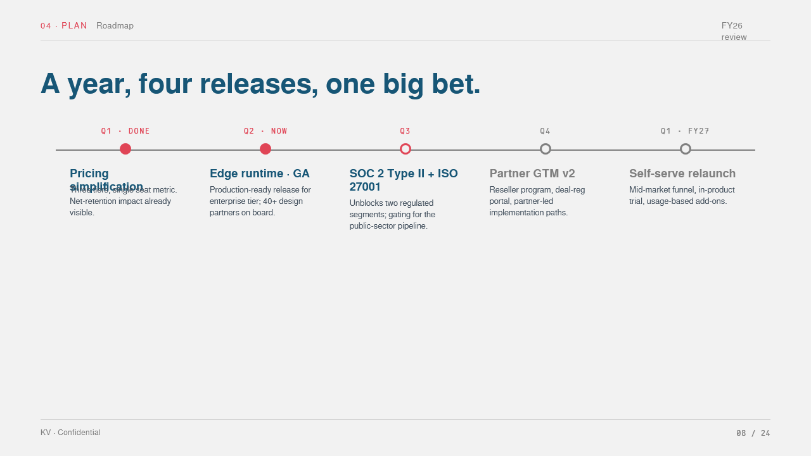
09 · Recommendation
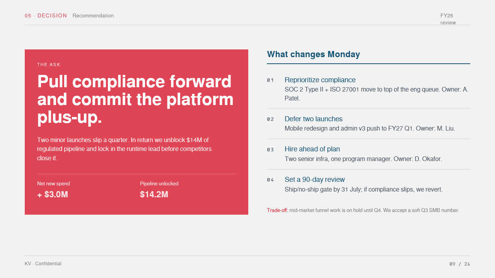
10 · Closing (on Slate)
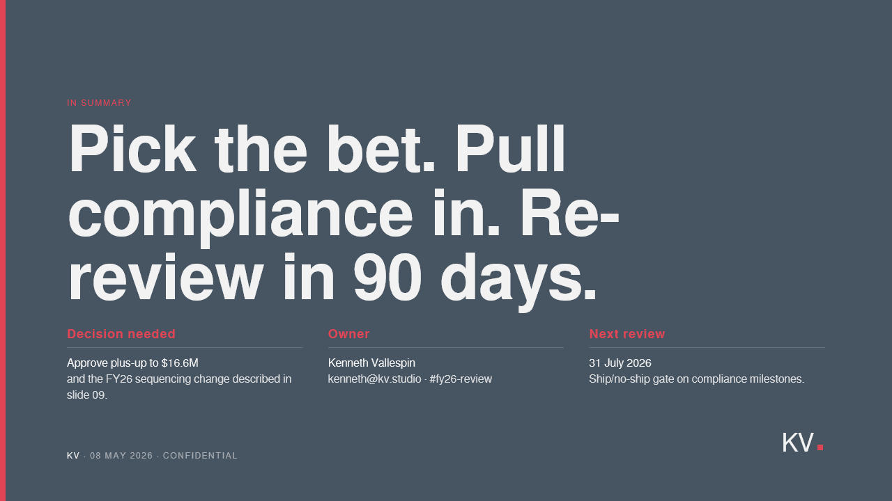
11 · Voice & content
Clear, sentence-case, executive-direct. Lead with the decision or the number; support with one line of context. No filler, no hype.
| Instead of | Write |
|---|---|
| ”Leveraging Synergies to Drive Growth" | "Edge runtime is the biggest FY26 lever." |
| "Q3 Performance Overview Deck" | "Q3: retention up 4 points, churn flat." |
| "ARR is looking really strong!!" | "ARR $48.2M, up 22% YoY.” |
Defaults
- Sentence case for every title and heading.
- One idea per slide; the title states the takeaway.
- Numbers in Atkinson Hyperlegible with
tabular-numsso columns align.- No emoji.
12 · Do & don’t
Do
- Use Cerise sparingly — for the single most important thing on the surface.
- Build hierarchy with size, color, and the marker bar.
- Switch to the data-viz ramp the moment a chart exceeds 3 series.
- Keep figures in Atkinson; keep code in Berkeley Mono.
- Sit content on Soft White; use Slate for dark surfaces.
Don't
- Don’t use pure black or pure white.
- Don’t add gradients, drop shadows on slides, or rounded “card” tropes.
- Don’t tint colors into pastels — Pale Ice is the only soft fill.
- Don’t use Berkeley Mono for numbers or table figures.
- Don’t use Title Case or ALL CAPS (except short eyebrows).
13 · Token reference
Mirror of colors_and_type.css. When in doubt, the CSS file wins.
/* Reds — identity */
--kv-cerise: #E04556; --kv-crimson: #D72839;
--kv-rosewood: #BB3250; --kv-coral: #E8676A;
/* Blues — structure */
--kv-deep-teal: #175676; --kv-sky: #4BA3C3;
--kv-pale-ice: #CEE5F3;
/* Neutrals */
--kv-slate: #475461; --kv-soft-white: #F2F2F2;
--kv-medium-gray:#7F7F7F; --kv-white: #FFFFFF; --kv-black: #000000;
/* Data-viz ramp (categorical · >3 series takes precedence) */
--kv-viz-1: #003F5C; --kv-viz-2: #594E90; --kv-viz-3: #BC4C96;
--kv-viz-4: #FF5F66; --kv-viz-5: #FFA600;
--kv-viz-6: #4BA3C3; --kv-viz-7: #8C5A3B; --kv-viz-8: #5C6670;
/* Type families */
--font-sans: "FreeSans", "Helvetica Neue", Arial, sans-serif;
--font-condensed: "FreeSans Display", "FreeSans", Arial, sans-serif; /* display = bold cut */
--font-figure: "Atkinson Hyperlegible", "FreeSans", Arial, sans-serif; /* numbers */
--font-mono: "Berkeley Mono", "JetBrains Mono", ui-monospace, monospace; /* code only */
/* Type sizes (1920×1080 baseline) */
--fs-display:96px; --fs-h1:56px; --fs-h2:40px; --fs-h3:28px;
--fs-body-lg:24px; --fs-body:20px; --fs-caption:16px; --fs-eyebrow:13px;
/* Spacing (4-based) */
--s-1:4 --s-2:8 --s-3:12 --s-4:16 --s-5:24 --s-6:32 --s-7:48 --s-8:64 --s-9:96 --s-10:128
/* Shape / lines */
--radius-0:0; --radius-1:2px; --radius-2:4px; --radius-pill:999px;
--hairline:1px; --rule:2px; --bar:4px;Quote
Build with clarity. Document with intent.